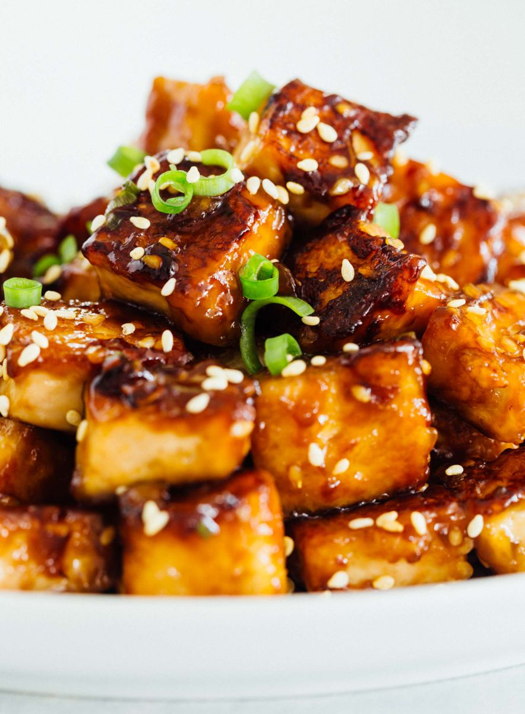

Tofu Recipe

Pan fried Tofu is delicous and it is good for you! It contains a lot of iron
and is made out of soy so it is also good for the planet.
Ingredients
- Extra Firm Tofu
- Green Onions
- Oil
- Honey
- Spices
Directions
- Squeeze all water from tofu using a paper towl
- Heat up oil in a pan
- Cut up tofu into squares and add to pan
- Cut up onions
- Add sauce and spices to pan
- Mix tofu until all sides are golden brown
- Add onions to pan
- Take mixture out of pan let cool and enjoy!